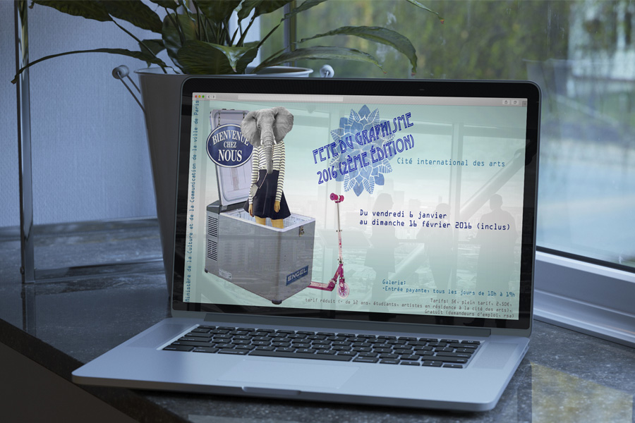

<div class="container clearfix">


	<div class="col1-1 centered">

	<div class="flexslider">
				<figure class="images">
					<ul class="slides">
						<li></li>
					</ul>
				</figure>
			</div>

</div>
<div class="big-break"></div>
<div class="col1-1 centered border-bottom">
		<h4 class="with-p-below">Affiche Hybride</h4><p class="small"><i>Graphisme</i></p>
        
        <button class="prev-ajax" href="ajax/project2.html">précédent</button>
        <button class="next-ajax" href="ajax/project4.html">Suivant</button>
	</div>
    
    <div class="clear"></div>
    
	<div class="col1-1 centered border-top">

		<div class="small-break"></div>
        <p><a class="close-ajax">Fermer</a></p>
    
	</div>


</div>